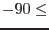

| Parameter | Mand | Type | Default | Constraints |
| eventset | yes | dataset | | |
Name of the event-list dataset.
|
| xcol | no | string | X | |
Name of the column of the event list to which to write the X coordinate values.
|
| ycol | no | string | Y | |
Name of the column of the event list to which to write the Y coordinate values.
|
| imagesize | no | real | 0.36 | |
Half-size of final image (in degrees).
|
| attsource | no | string | binned | binned|odf|fixed |
Source of the attitude data. If this equals `odf', the environment variable SAS_ODF must be set to point to the appropriate ODF.
|
| inbinnedattset | yes | dataset | | |
Name of the dataset from which to read the pre-binned attitude data (usually expected to be the output file of attbin). This parameter is read if attsource=`binned'.
|
| odfattsource | no | string | ahf | ahf|om |
Whether to use the Attitude History File or the OM pointing history file from the ODF. This parameter is read if attsource=`odf'.
|
| pntkwdset | yes | dataset | | |
Name of the dataset from which to read the spacecraft average pointing keywords (usually expected to be the output file of atthkgen). This parameter is read if attsource=`odf'.
|
| maxdelta | no | real | 0.02 |  maxdelta maxdelta |
A new attitude bin is started if the attitude jumps by more than this amount (in arcsec). This parameter is read if attsource=`odf'.
|
| withmedianpnt | no | boolean | yes | |
Whether to use/calculate median or mean pointing for the *_PNT keywords. This parameter is read if attsource=`odf'.
|
| writebinnedatt | no | boolean | no | |
Whether to write the binned attitude to file. If `yes', the data is written to outbinnedattset. This parameter is read if attsource=`odf'.
|
| outbinnedattset | yes | dataset | | |
The dataset which is to contain the binned attitude data. This parameter is read if writebinnedatt=`yes'.
|
| attra | yes | angle | |  attra attra |
Right Ascension of the spacecraft attitude. This parameter is read if attsource=`fixed'.
|
| attdec | yes | angle | | attdec |
Declination of the spacecraft attitude. This parameter is read if attsource=`fixed'.
|
| attapos | yes | angle | | attapos |
Position angle of the spacecraft attitude. This parameter is read if attsource=`fixed'.
|
| tangdirstyle | no | string | pnt | nom|obj|pnt|user |
Source of celestial coordinates of the point at which the projection plane is tangent to the celestial sphere. Values `nom', `obj' or `pnt' cause the task to read these coordinates from keywords in the event list which have the form *_NOM, *_OBJ and *_PNT respectively, where * is either RA or DEC. (Note that the PNT values have already been written to the file by evproject.) If tangdirstyle=`user', the coordinates are read from parameters tangdirra and tangdirdec.
|
| tangdirra | yes | real | | tangdirra |
RA of the point at which the projection plane is tangent to the celestial sphere. This parameter is read if tangdirstyle=`user'.
|
| tangdirdec | yes | real | | tangdirdec |
Declination of the point at which the projection plane is tangent to the celestial sphere. This parameter is read if tangdirstyle=`user'.
|
| Parameter | Mand | Type | Default | Constraints |